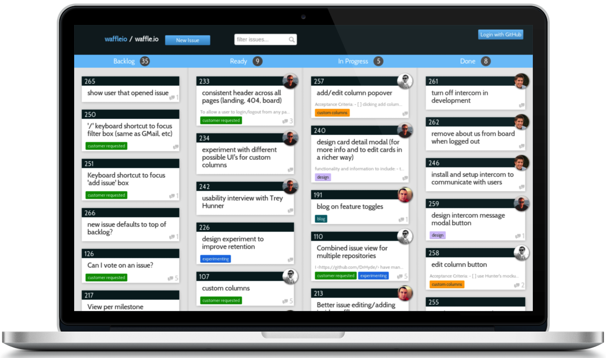
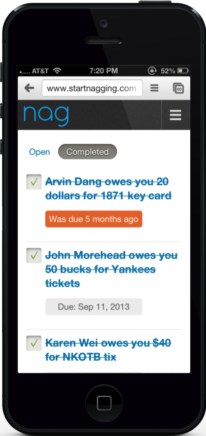
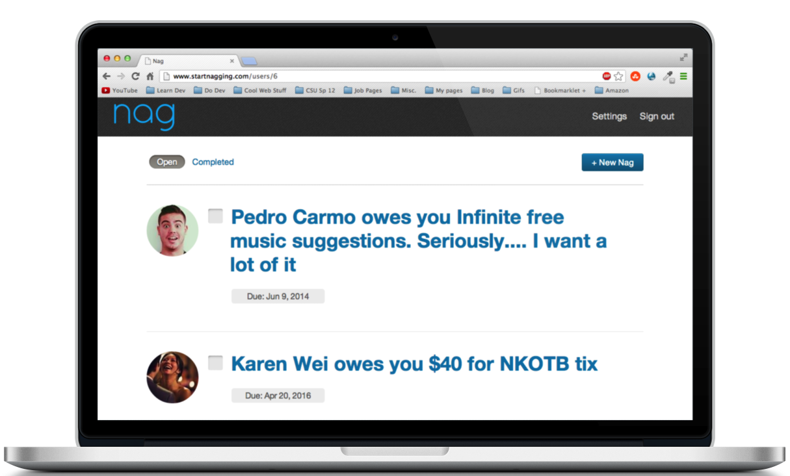

Will Piers - Ruby, Rails, Javascript Developer

I am a web developer and math student originally from Boulder, Colorado. I like to play games (chess), write code (Ruby, JS, HTML, CSS, Backbone.js), play basketball, and spend time with my friends, family, and chocolate lab.
This past summer (2013) I spent most of my time working with the awesome people at Rally Software. As an intern, I was led by a mentor and worked with 4 other interns to build a new product for Rally. That product came to be known as waffle.io, a light-weight agile project management tool built with developers in mind.
Over the last few years, I've spent much of my time studying for and attending courses in the mathematics department. My performance has been recognized by way of the Dean's List. I will graduate this Spring (2014).
The Starter League
Last Winter/Spring, I decided to leave college for a semester and travel to Chicago for a Ruby on Rails course put on by The Starter League. This is where I learned a great deal of the web development foundation that has carried me into the present.
waffle.io
This is waffle.io, a light-weight project management tool for teams of developers. We started waffle with the vision of making open source projects run more smoothly, and letting possible contributors figure how to most effectively help. It is built with a mongodb/node.js backend and a backbone.js/chaplin frontend.

While attending The Starter League, a group of five other students and I formed a team to build a web application. Our vision turned into nag. Nag is a way to keep track of the things you've loaned to friends, as well as a way to remind them to return those things in a timely manner.
 We built Nag with Ruby on Rails, Sass, Haml, jQuery. As well, a core component of the appication is its integration with Facebook, meaning we worked pretty closely with the Facebook API. Check out nag on Github.
Check out the rest of my open source work on GitHub